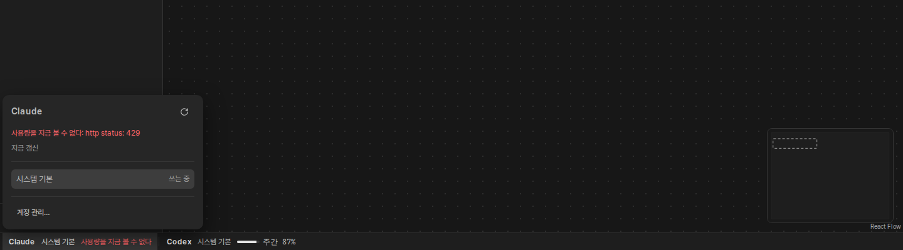
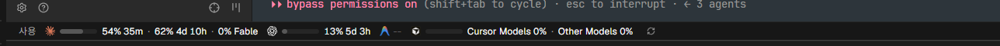

사용량: 상태 줄 한 덩어리, 팝오버 하나

사용량
5시간46%2시간 41분 남음
주간38%4일 6시간 남음
Fable100%4일 6시간 남음
5시간 창 초기화 (화) 11:29 · 주간 창 초기화 (토) 20:59
- 시스템 기본쓰는 중
- personal@gmail.com87% 사용
주간87%1일 4시간 남음
주간 창 초기화 (일) 08:30
지금 갱신
